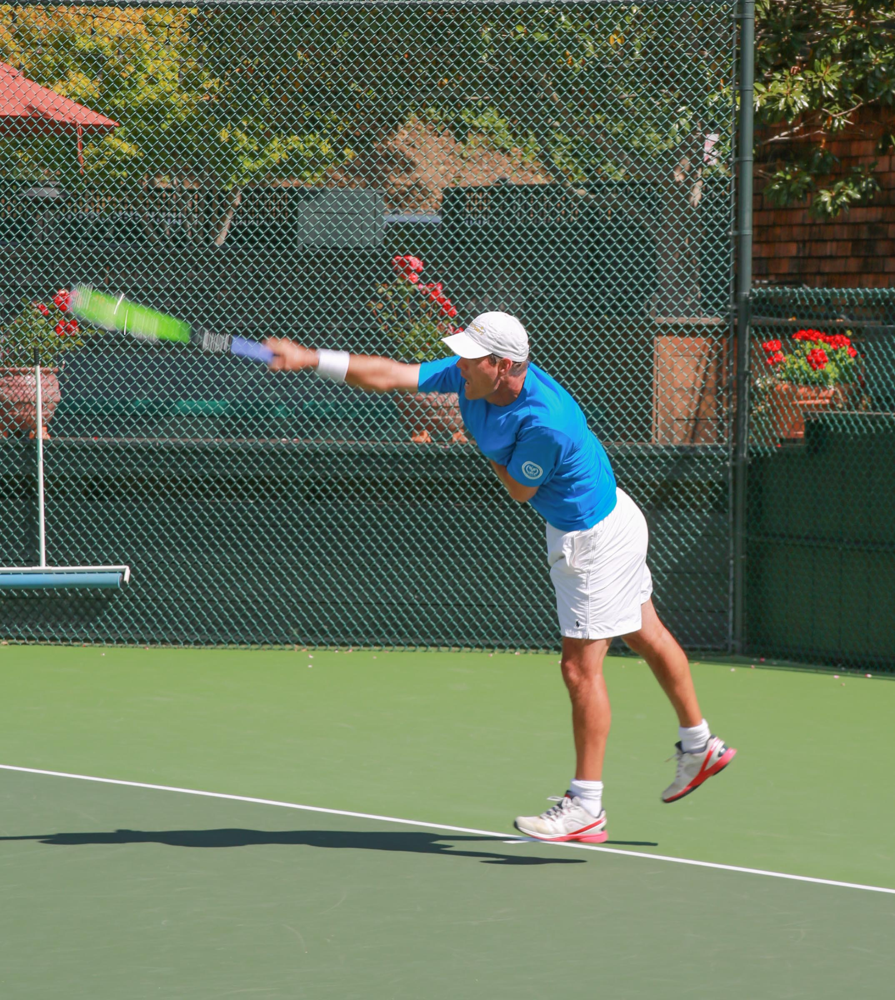
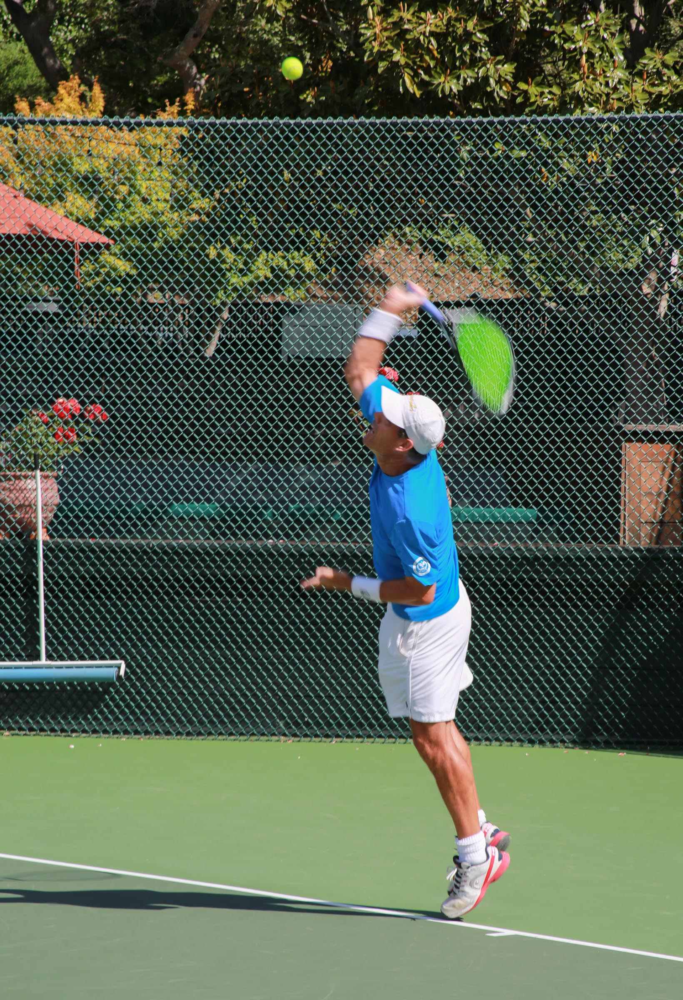
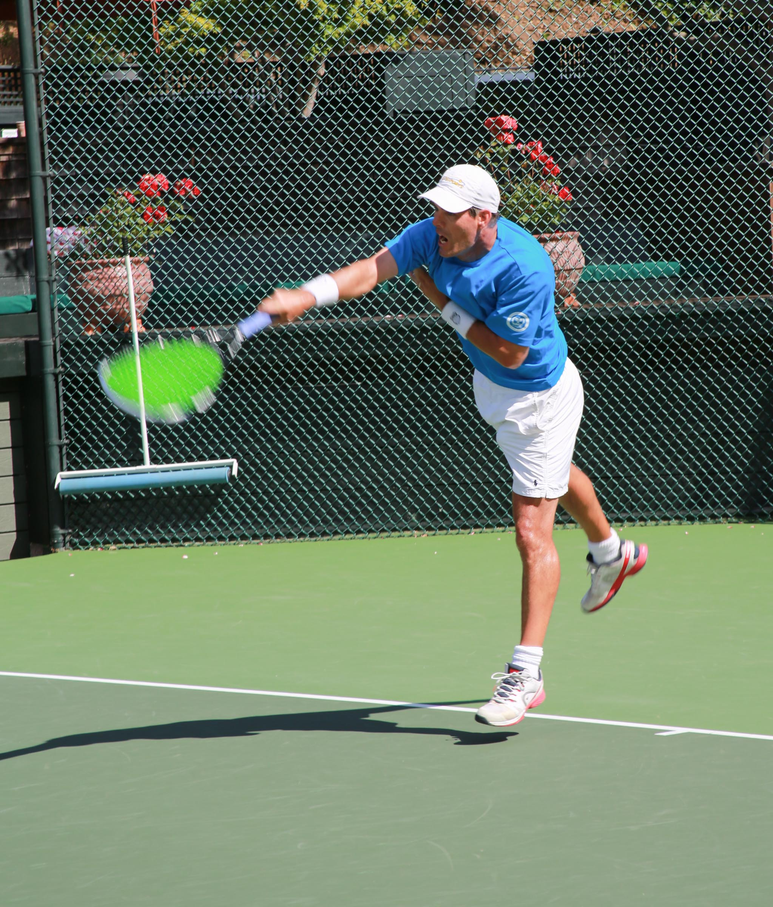

Peninsula & South Bay · Tennis coaching
A stronger game.
A smarter approach.
Private tennis coaching for adults, doubles teams, and competitive players. Individual attention. Purposeful practice.
A personal approach, from your first conversation to your next match.




What players say
Progress you can feel.
Space for real player stories, with their goals, outcomes, and testimonial dates.
“Tailored the drills and lessons to me.”
“The kids progressed quickly and had fun.”
“Taught smart match strategies I could use.”
About these draft testimonials
These short examples come from the report’s suggested layout. Confirm the original wording, attribution, permission, and dates before publishing them as testimonials. Full stories can be added here.
Find your fit
Different players.
Individual goals.
You might be rebuilding a stroke, finding a reliable serve, or preparing for league play. Start with what you want to improve.
Adults
Improve technique, consistency, and match patterns.
Explore coaching 02Juniors
A proposed program for developing fundamentals and confidence.
Explore coaching 03Doubles & groups
Work on positioning, strategy, and drills.
Explore coaching 04League & competitive
Practice tactical decisions, serve and return, and match preparation.
Explore coachingTo confirm Junior coaching, group sizes, and available formats will be reviewed with Scott.
What happens next
A conversation.
Then a plan.
No need to know exactly which program you need. Start by sharing a little about your game.
- 01
Contact Scott
Choose a call, text, WhatsApp, email, or short inquiry.
- 02
Share your goals
Talk about your level, location, and availability.
- 03
Find the right lesson
Scott recommends a format and a place to begin.